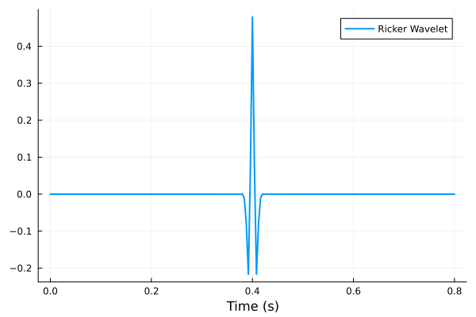
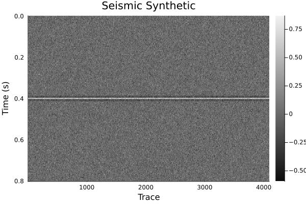

Generating Synthetics with the LocalSignalAttributes.jl Package
The LocalSignalAttributes.jl package provides tools to generate synthetic seismic signals. This guide demonstrates how to generate a Ricker wavelet using the ricker function and visualize it.
Function: ricker
ricker(input::Array; dt=1.0, f=0.2)
The ricker function generates a Ricker wavelet (commonly used in seismic studies) from an input array.
Parameters:
input::Array: Input array (e.g., spike signal).
dt=1.0: Time sampling interval in seconds (default = 1.0).
f=0.2: Dominant frequency of the Ricker wavelet in Hz (default = 0.2).Below is an example of how to use the ricker function to generate a Ricker wavelet from a spike signal and plot it using the Plots.jl library.
using LocalSignalAttributes
using Plots
# Define parameters
nt = 201 # Number of time samples
dt = 0.004 # Time sampling interval (seconds)
# Create a spike signal (impulse in the middle)
spike = zeros(Float32, nt)
spike[1 + (nt - 1) ÷ 2] = one(Float32)
# Generate time axis
t = range(start=0, step=dt, length=nt)
# Generate the Ricker wavelet
ricker1 = ricker(spike; dt=dt, f=25.0)
# Plot the Ricker wavelet
plot(t, ricker1, xlabel="Time (s)", ylabel="Amplitude", lw=2, legend="Ricker Wavelet")
Output:
The plot will display the Ricker wavelet with its amplitude versus time, providing an intuitive visualization of this synthetic signal.

Generating Toy Seismic Synthetic (A Flat Event)
# Create a flat event (multiple identical traces)
ntraces = 4096
traces = repeat(ricker1, 1, ntraces)
# Add noise to the flat event
noisy_traces = traces .+ randn(size(traces)) * 0.1
# noisy_traces = traces # Uncomment to visualize without noise
# Plot the noisy flat event as a heatmap
heatmap(1:ntraces, t, noisy_traces,
yflip=true, cmap=:grays,
title="Seismic Synthetic", ylabel="Time (s)", xlabel="Trace")
Output:
The heatmap shows the synthetic seismic data with time on the vertical axis, trace number on the horizontal axis, and amplitude represented by intensity.
Without Noise: Uncomment the line # noisy_traces = traces to visualize the flat event without any noise.
With Noise: Default visualization includes Gaussian noise (σ = 0.1) added to the flat event.